Tap a marker to jump to its checklist entry. “Show on image” opens that structure in place. Tap between markers to enlarge the specimen. In Self-test the keys start closed.
Orientation and quick review
Start here: practical orientation
Supraspinatus, infraspinatus, teres minor and subscapularis stabilize the humeral head in the glenoid. The first three insert on the greater tubercle; subscapularis inserts on the lesser tubercle. Teres major is not in the cuff.
Find the spine on the posterior surface and the glenoid laterally. The subscapular fossa faces the thorax. Upward rotation by serratus anterior and trapezius helps the arm rise above shoulder level.
Encloses subclavius and pectoralis minor; continues as the suspensory ligament of the axilla. Structures piercing it include the cephalic vein, thoracoacromial artery and lateral pectoral nerve.
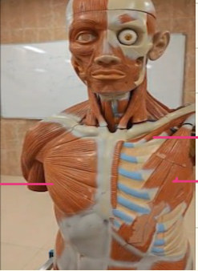
Pectoral wall: anterior torso model
Open originalIdentification key & checklist
Clavicle, sternum and upper costal cartilages to the lateral lip of the intertubercular groove. Adducts and medially rotates; clavicular fibres flex the arm. Medial and lateral pectoral nerves.
Show on imageRibs 3–5 to coracoid process; deep to major. Draws the scapula anteriorly and inferiorly and stabilizes it. Medial pectoral nerve.
Show on imageFirst rib and its cartilage to the underside of the clavicle. Anchors and depresses clavicle and helps shield the underlying neurovascular bundle. Nerve to subclavius.
Show on image
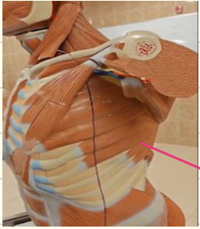
Serratus anterior: lateral chest wall
Open originalIdentification key & checklist
Digitations arise from ribs 1–8 or 9 and attach to the anterior surface of the medial scapular border. Protracts, anchors and upwardly rotates the scapula. Long thoracic nerve injury produces medial winging, especially on a wall push.
Show on image
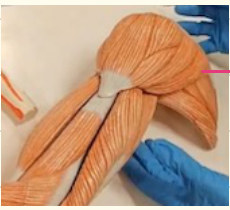
Deltoid: superficial shoulder
Open originalIdentification key & checklist
Lateral third of clavicle, acromion and scapular spine to deltoid tuberosity of humerus (not tibia). Axillary nerve. Anterior fibres flex, middle fibres abduct, posterior fibres extend. The classic middle-fibre teaching range is about 15–90°, with overlap.
Show on image
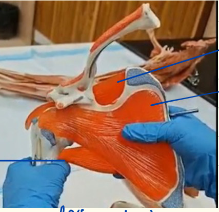
Rotator cuff: anterior specimen view
Open originalIdentification key & checklist
From supraspinous fossa to superior facet of greater tubercle. Helps initiate abduction (classically first 15°). Suprascapular nerve.
Show on imageFrom anterior subscapular fossa to lesser tubercle. Medially rotates the humerus. Upper and lower subscapular nerves.
Show on imageA posterior cuff muscle at the lateral scapular border. Follow around the edge to see it more clearly in the posterior view.
Show on image
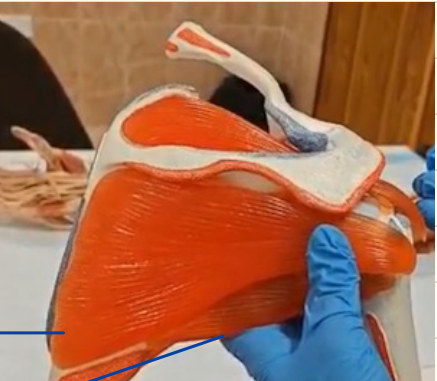
Rotator cuff: posterior specimen view
Open originalIdentification key & checklist
Fills the fossa below the scapular spine; inserts on middle facet of greater tubercle. Laterally rotates. Suprascapular nerve.
Show on imageNarrow strip along lateral border, below infraspinatus; inserts on inferior facet of greater tubercle. Laterally rotates. Axillary nerve.
Show on image
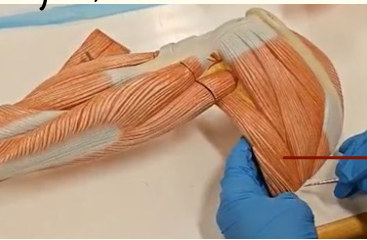
Teres major: posterior view
Open originalIdentification key & checklist
From inferior angle and adjacent lower lateral scapular border to medial lip of intertubercular groove. Adducts and medially rotates. Lower subscapular nerve. Not part of the cuff.
Show on image
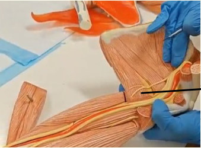
Teres major: anterior view
Open originalIdentification key & checklist
Trace it to the medial lip of the bicipital groove. Remember: pectoralis major lateral lip, latissimus dorsi floor, teres major medial lip.
Show on image
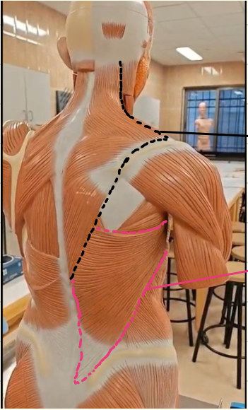
Back muscles attaching to the shoulder girdle
Open originalIdentification key & checklist
Occiput, nuchal ligament and C7–T12 spinous processes to lateral clavicle, acromion and scapular spine. Upper elevates, middle retracts, lower depresses. Spinal accessory nerve (cranial nerve XI).
Show on imageLower thoracic spine, thoracolumbar fascia, iliac crest and lower ribs to the floor of the bicipital groove; scapular slip may occur. Adducts, medially rotates and extends. Thoracodorsal nerve.
Show on image
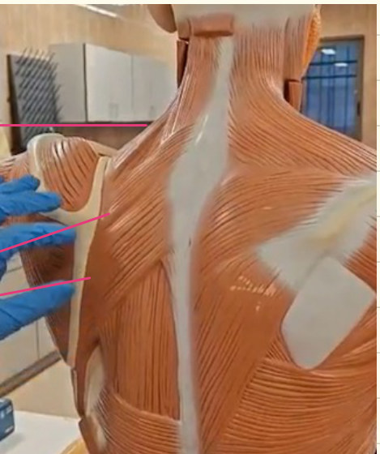
Medial scapular border: rhomboid region
Open originalIdentification key & checklist
C1–C4 transverse processes to the upper medial scapular border. Elevates scapula. Dorsal scapular nerve with C3–C4 contributions.
Show on imageThe narrower, superior band at the medial end of the scapular spine. Origin C7–T1 and nuchal ligament.
Show on imageThe broader, inferior band, originating at T2–T5. Both retract the scapula and receive the dorsal scapular nerve. The handwritten origin lines and photo labels reverse minor and major; use position and size to distinguish them.
Show on image
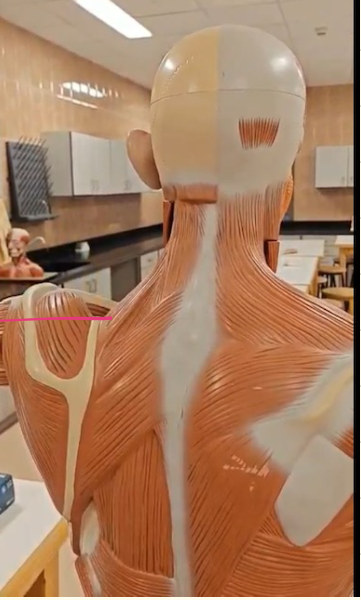
Levator scapulae: second view
Open originalIdentification key & checklist
Trace the narrow muscle from upper cervical transverse processes to the superior angle and adjacent medial scapular border.
Show on image
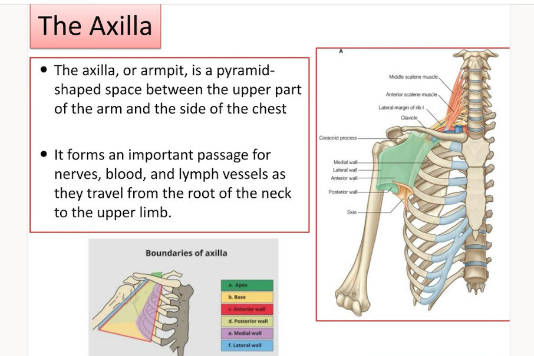
Axilla: overview and inlet
Open originalIdentification key & checklist
Pyramid between chest and upper arm; passage from root of neck to limb. Inlet borders: clavicle anteriorly, superior scapular border posteriorly, and outer border of first rib medially.
Show on image
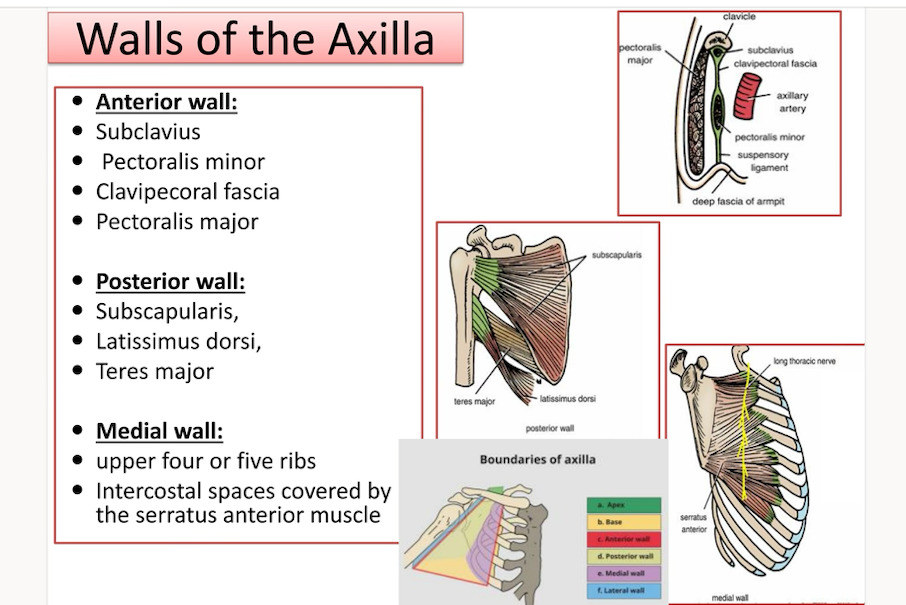
Axillary walls: course diagrams
Open originalIdentification key & checklist
Anterior: pectoralis major, pectoralis minor, subclavius and clavipectoral fascia. Posterior: subscapularis superiorly, teres major and latissimus dorsi inferiorly.
Show on imageUpper ribs and intercostal spaces covered by serratus anterior.
Show on image
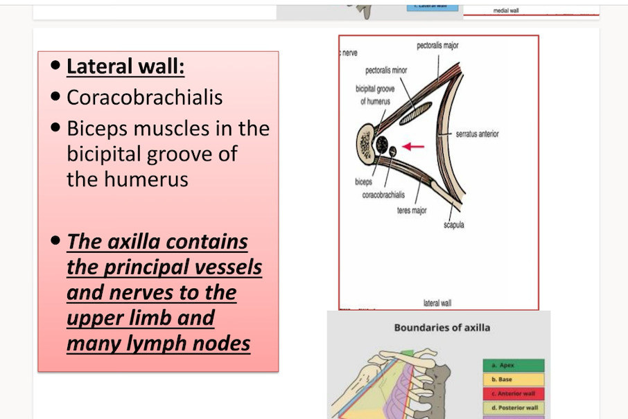
Axilla: lateral wall and main contents
Open originalIdentification key & checklist
Narrow intertubercular groove of humerus, with coracobrachialis and short head of biceps alongside. The long-head biceps tendon lies within the groove.
Show on image
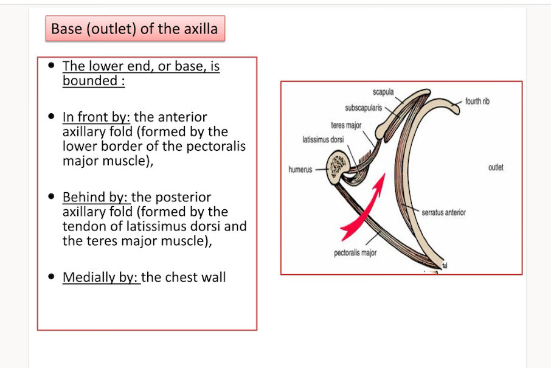
Axilla: base and folds
Open originalIdentification key & checklist
Skin and axillary fascia between the folds; chest wall medially. Anterior fold = inferior border of pectoralis major. Posterior fold = latissimus dorsi and teres major.
Show on image
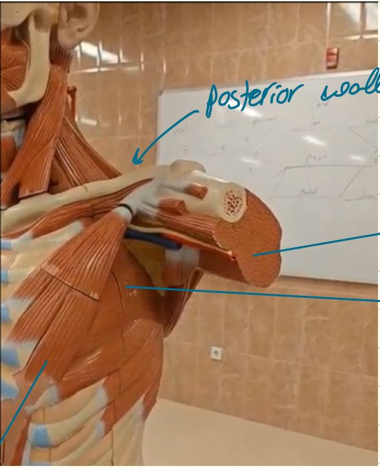
Axillary walls: model station
Open originalIdentification key & checklist
Follow the pectoral muscles toward the anterior axillary fold.
Show on imageIdentify subscapularis on the scapular surface, with teres major and latissimus dorsi below.
Show on imageFind the proximal humerus, the narrow bony boundary.
Show on imageTrace serratus anterior on the ribs; this is the chest-wall side.
Show on image
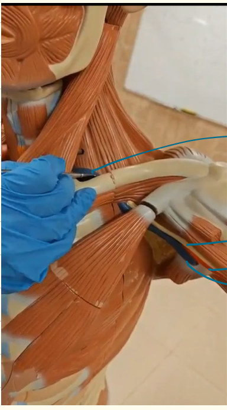
Axillary neurovascular bundle
Open originalIdentification key & checklist
The subclavian artery becomes the axillary artery at the lateral border of the first rib; the axillary vein becomes subclavian at the same landmark in the reverse direction.
Show on imageNerve cords are named by their positions relative to the second part of the axillary artery. Differentiate nerves from vascular structures by tracing their course.
Show on imageFrom lateral border of first rib to inferior border of teres major, where it becomes brachial. Pectoralis minor divides it into three parts.
Show on imageTypically anteromedial to the artery; accompanies it through the axilla. Lymphatic vessels and axillary nodes also pass through this space.
Show on image
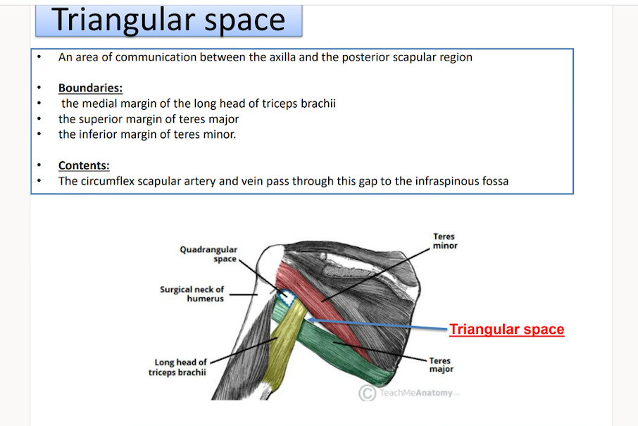
Triangular space: boundaries and contents
Open originalIdentification key & checklist
Posterior view: teres minor superiorly, teres major inferiorly, long head of triceps laterally. Circumflex scapular artery and vein pass toward the infraspinous region. The slide’s text reverses the two teres borders; use the corrected order.
Show on image
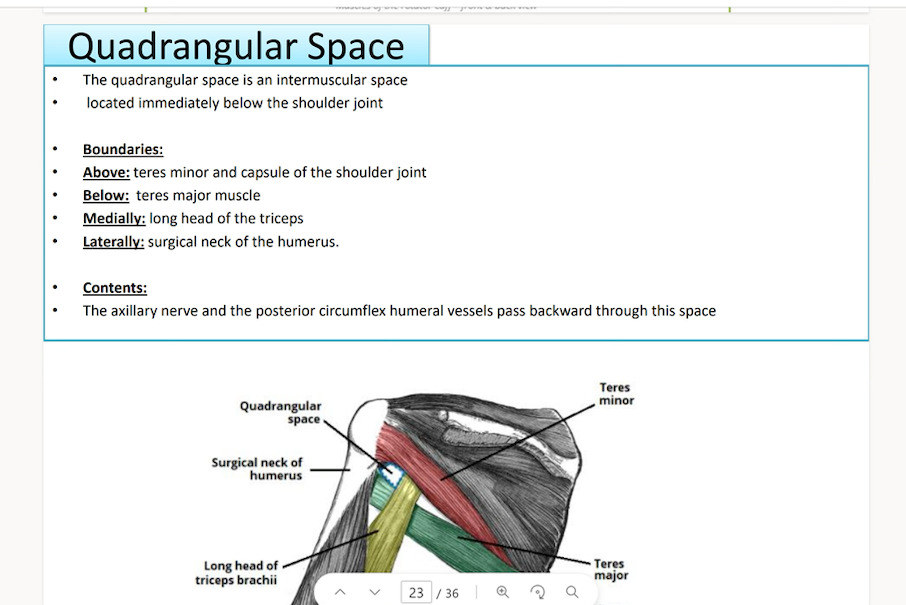
Quadrangular space: boundaries and contents
Open originalIdentification key & checklist
Posterior view: teres minor superiorly, teres major inferiorly, long head of triceps medially, surgical neck of humerus laterally. Contains axillary nerve and posterior circumflex humeral vessels.
Show on image
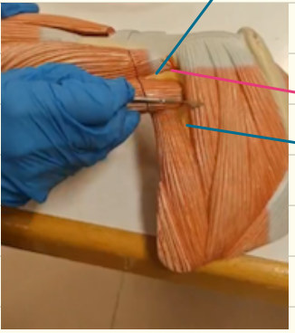
Shoulder spaces on the model
Open originalIdentification key & checklist
Identify the more lateral opening by the surgical neck. The axillary nerve and posterior circumflex humeral vessels pass here.
Show on imageFollows the axillary nerve around the surgical neck of the humerus.
Show on imageMedial to the long head of triceps; carries circumflex scapular vessels. It is distinct from the inferior triangular interval (radial nerve and profunda brachii artery).
Show on image
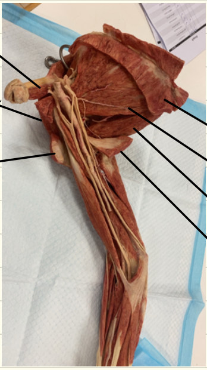
Plastinated specimen: pectoral-to-posterior transition
Open originalIdentification key & checklist
Small strip immediately under the clavicle.
Show on imageTrace the deeper triangular muscle to the coracoid.
Show on imageThe superficial muscle forming the anterior fold.
Show on imageLook for rib digitations on the medial wall.
Show on imageBroad muscle on the anterior surface of the scapula, forming the upper posterior wall of the axilla.
Show on imageInferior posterior muscle passing to the medial lip of the groove.
Show on imageBroad posterior muscle passing to the floor of the groove.
Show on image
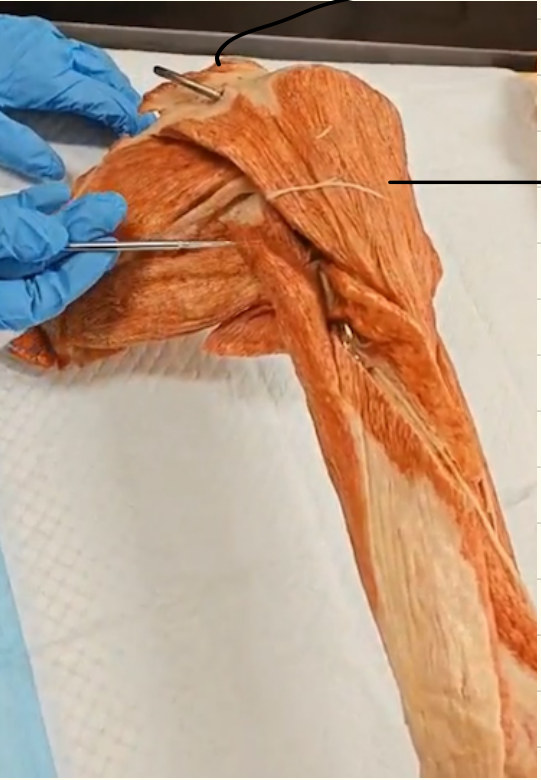
Plastinated specimen: deltoid and trapezius
Open originalIdentification key & checklist
Superficial cap over the shoulder; trace distally to the deltoid tuberosity.
Show on imageBoth meet the lateral clavicle, acromion and scapular spine. These are trapezius insertions and deltoid origins.
Show on image
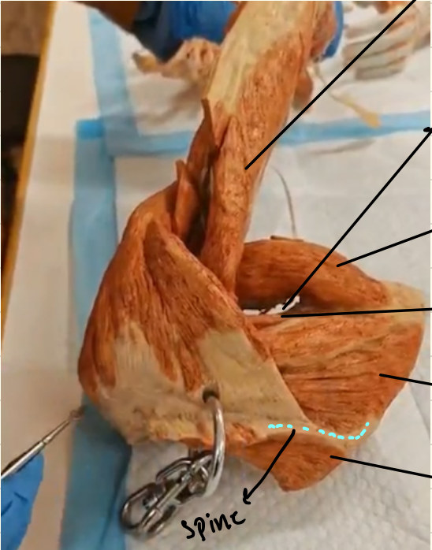
Plastinated specimen: posterior shoulder and spaces
Open originalIdentification key & checklist
An important landmark between the shoulder spaces; trace proximally to the infraglenoid tubercle.
Show on imageLook medial to the long head of triceps, between teres minor and teres major.
Show on imageLarger inferior muscle; separate it from the cuff’s teres minor.
Show on imageSmaller strip above teres major, along the lateral scapular border.
Show on imageBroad cuff muscle below the scapular spine.
Show on imageUse the spine to separate supraspinous fossa above from infraspinous fossa below.
Show on image
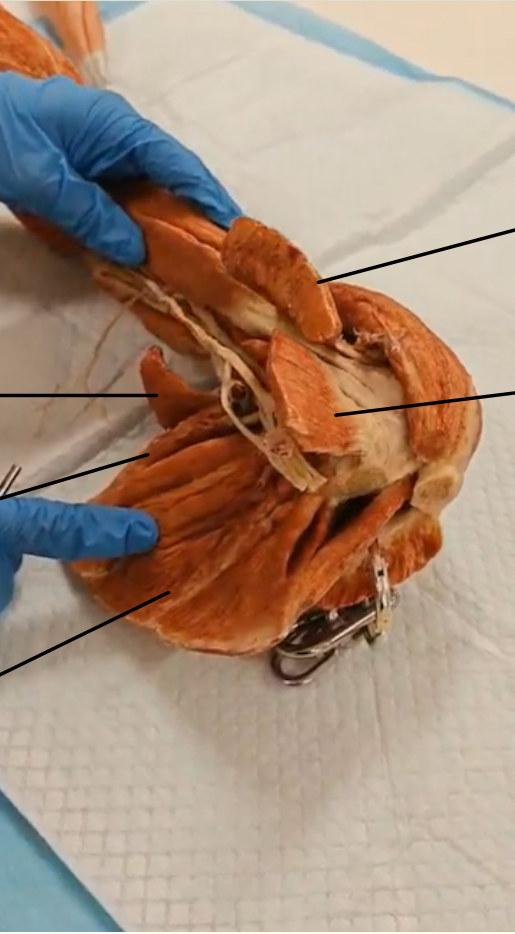
Plastinated specimen: axillary dissection
Open originalIdentification key & checklist
Superficial anterior muscle, lifted in this view.
Show on imageSmaller deeper muscle converges onto the coracoid process.
Show on imageTrace along the posterior fold toward its humeral tendon.
Show on imageLies near latissimus dorsi in the posterior fold; their humeral insertions differ.
Show on imageBroad muscle on the costal surface of the scapula, deep in the posterior wall.
Show on image
Practical quiz · 23 spotters
Use “View Figure” to open the specimen. The quiz shows only the requested marker where needed; some supplied diagrams retain their printed labels.
Source figures: Lab note 3 by Sondos Alfwaeer (pages 2–5). Some lecture-slide images retain their original text; use the checklist for corrected borders and labels. Further revision: Back, pectoral and scapular lecture. Anatomy references: Axilla and quadrangular space.